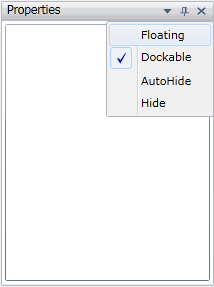

We can float any number of controls individually or in nested floating or in tabbed floating. A control can be floated by setting DockState to Float. It can also be floated by selecting Floating option from the menu button options as shown in the below figure,

Figure 85: Docking Menu Containing Floating Option
 Nested Floating
Nested Floating